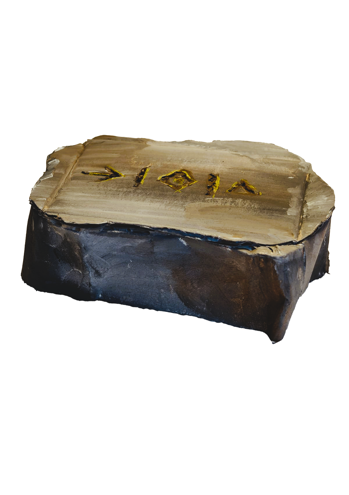

⊣
DUR
ABSENCE / END
VESTIGAN ARCHIVE / COLLECTION 01 OF 08
A fragment of a forgotten civilization. An inscription without a confirmed translation. What can we recover from a language that time has almost erased?
01 / THE DISCOVERY
This fragment was recovered from the remains of an ancient Martian settlement. Its surface carries three recurring signs. Their meaning is still open to interpretation.

02 / THE INSCRIPTION
The inscription can be transcribed as DUR — MER — KA. Each sign has a proposed meaning based on the Vestigan writing system developed for this archive.
ABSENCE / END
MEMORY / PRESERVATION
ORIGIN / BEGINNING
03 / YOUR INVESTIGATION
Look at the three signs and their possible meanings. What do you think this fragment is trying to tell us? Write down your own interpretation before opening the archive.
YOUR INTERPRETATION
ARCHIVE INTERPRETATION
DUR — Absence / MER — Memory / KA — Origin
This is a proposed poetic interpretation, not a verified literal translation. The meaning of the inscription remains open to discussion.
04 / LITERARY CONNECTION
How do you understand a civilization when its language no longer exists?
In H. Beam Piper's science-fiction story Omnilingual (1957), archaeologists explore the remains of an ancient Martian civilization. They can recognize and pronounce parts of its writing, but understanding its meaning presents a much greater challenge.
The story refers to the Rosetta Stone: a historical example of how a known language can help unlock an unknown writing system. The same question drives this archive: what evidence do we need before we can claim to understand the past?
REFERENCE: H. Beam Piper, Omnilingual, 1957. Read the original story at Project Gutenberg .